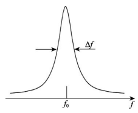
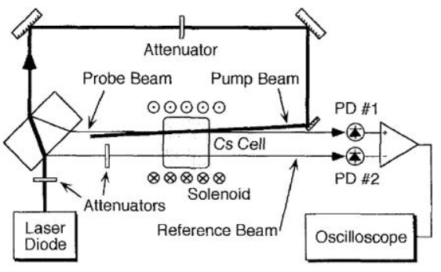
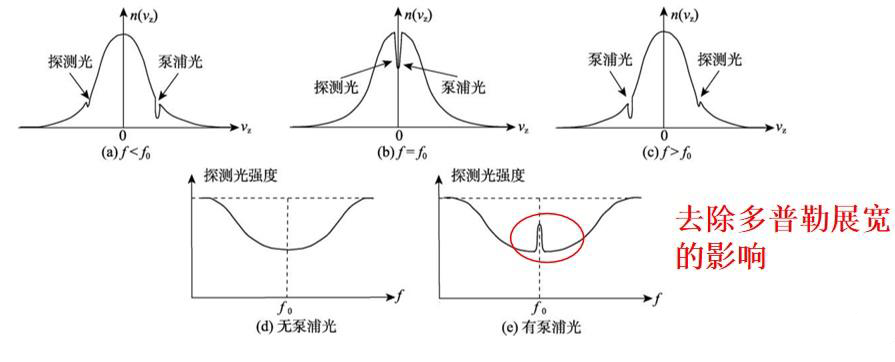
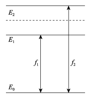
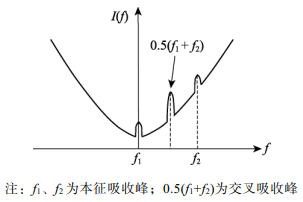
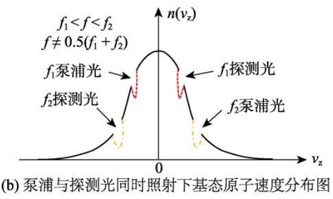
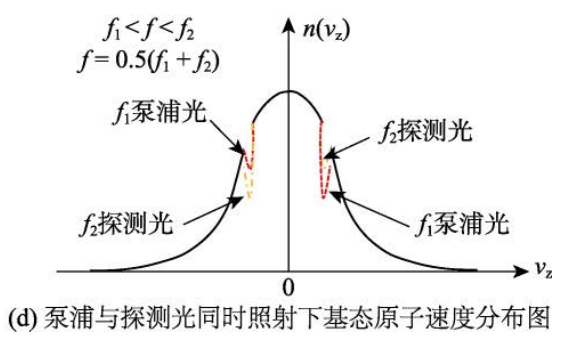

饱和吸收谱
饱和吸收谱一般在实验上用于找对照点，之后详述。
饱和吸收谱
简介
饱和吸收光谱(saturated absorption spectroscopy)是一种测量原子吸收光谱的技术，其不会被由原子热运动的引入的多普勒频移影响，运用饱和吸收谱，我们可以找出原子能级跃迁的真实谱线。
原理
光谱原理
原子核周围的电子有一些不同的能级，当有一束光打到这个原子上的时候，如果这个光的频率正好满足电子的跃迁频率，电子就会吸收光子并在能级间跃迁，比如从基态跃迁到激发态，也就是发生了泵浦。而当电子从激发态再回到基态的时候，相应的就会发出一个光子，也就是弛豫。我们可以通过给原子不同频率的光，通过观察透射谱看它对于光的吸收与发射情况，以此得到一些信息，这就是光谱的基本的原理。
光谱展宽
从刚才的光谱原理我们知道，电子从激发态降到基态，放出一个确定的频率光，按理说它光谱应该是一条在该频率处的直线，但是实际上，它并不是直线，而是一个在跃迁频率附近有一定线宽的图形，如图1所示。

这是因为光谱发生了展宽，造成展宽的因素主要有三个：
- 自然展宽：由量子力学的不确定性原理所引起的，一个电子处于激发态的时间不确定度与激发态跃迁到基态释放出的光子能量不确定性满足：，由此，自然展宽与相对应的激发态平均寿命的关系满足：，自然展宽的线型属于洛仑兹线型，一般为MHz 量级。由于量子力学不确定性原理的微观普适性，自然展宽无法避免，不可消除。
- 多普勒展宽：在有限温度情况下，辐射光子的原子将处于不规则运动状态，其与探测器间发生相对运动，引起多普勒效应。由于多普勒效应，与探测器有相对运动的原子接收到的光频率并非光源频率，这导致从探测器角度看，原子有可能被非原子激发频率的光激发，而造成可以被吸收的光有一个较大的频率范围，这将掩盖该范围内的其他细致光谱结构。多普勒展宽属于高斯线型，是谱线变宽的主要因素，一般为几百MHz。其定量描述为：，其中m为原子质量，为玻尔兹曼常数，c为光速，能级间的跃迁频率。
- 压力展宽：粒子密集时，辐射光子的原子与其他原子或离子相互作用，导致辐射原子能级产生畸变。从而使原子从激发态回到基态时放出的光子频率不是“正常”数值，这可能导致光谱形状和宽度都发生变化，称为压力展宽。其主要是由于原子之间互相碰撞造成能量传递产生的，它影响较小，可以通过减少原子的数目来得到有效的抑制。
饱和吸收谱实验装置与原理
如图2所示，先从同一个激光源发出一束光，再经过某些操作，让它分为一束强的泵浦光和一束弱的探测光，让泵浦光和探测光对打，让强的泵浦光提前将原子激发到饱和，这样弱探测光探测过去的时候，因为原子已经饱和了，就不会吸收探测光，会发生一个增强的透射，根据这个透射峰我们就可以得到在无多普勒影响下的原子能级。

具体的探测原理如下图3所示，因为泵浦光和探测光他们的方向相反，如果泵浦光和探测光的频率不等于跃迁频率的话，原子需要多普勒效应补偿一下才能满足跃迁频率，如图3中a,c，泵浦光激发+v(-v)处的原子，探测光和泵浦光方向相反的，那么探测光激发的就是-v(+v)的原子，它们俩各激发各的，互不影响。如果它俩的频率正好等于原子跃迁频率，如图3b,那么泵浦光激发的是v=0的原子，探测光探测的也是v=0的原子，这两束光照射的是同一批原子，这样的话，因为这批原子已经提前被泵浦光抽到饱和，就不会吸收探测光，因此光谱就会出现一个增强的透射峰(图3e)。

饱和吸收谱还有一个额外峰叫做交叉吸收峰，它会出现在有两个以上激发态能级的时候，当有两个激发态，这两个激发态的跃迁频率的中间频率处会出现一个交叉峰。如下图所示是一个共下能级的三能级系统：

当时光谱会出现一个增加透射峰，如图所示：

简单解释就是，当光频率不等于中间频率时，如图所示，它们四个频率的光各激发各的，互不干预。

当频率正好等于中间频率时，如图所示,的探测光就会探测到被已经被泵浦光激发到饱和的原子，因此不会被吸收，光谱出现一个增加透射峰。

参考文献
==本文大量引用了上述参考文献和一些网络资源，仅供个人学习使用，之后会将网络资源贴齐==
/head.jpg)